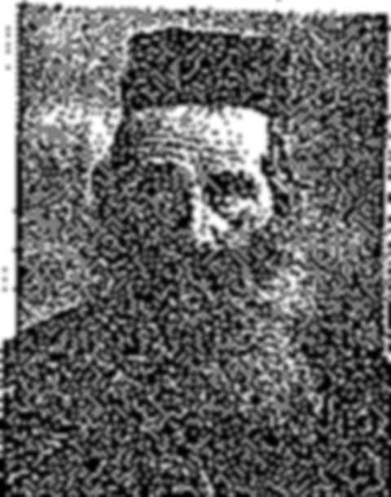
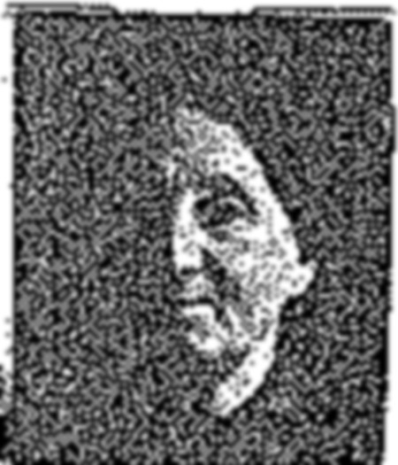
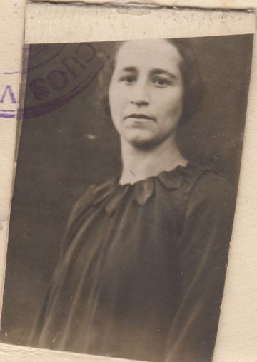

איך לקרוא את הדף
כל פרט מסומן לפי מידת הביסוס שלו במקורות. שמות מופיעים גם בכתיב המקורי שבו נרשמו, כי זה מה שעוזר לחפש הלאה.
תאריכים לפני 1918 נרשמו ברוב המסמכים לפי הלוח היוליאני (פער של 12–13 ימים מהלוח הגרגוריאני). כשהתאריך הומר, מופיעים שני הלוחות.
עץ המשפחה
מהדור העתיק ביותר שנמצא ועד היום. הצבע בשולי כל כרטיס מראה את רמת הביסוס.
העץ במבט אחד
בטלפון אפשר לגלול את העץ הצידה. הצבע בצד ימין של כל תיבה הוא רמת הביסוס. פירוט מלא של כל אדם מופיע בכרטיסים מתחת לעץ.
- דב-משה מילצקיאורליה, פלך גרודנה
- ר' ראובן1866(?)–1953+ רייזה זלדה יודקובסקי
- רחה לאהנ. 1891
- ר' חיים חייקל זאבירושלים · נפ. 1964
לידה 1898: זיהוי 🟡+ מרים 🟡- ר' משה יוסף1928–2010
דיין בירושלים - ר' אהרן נחוםבני ברק
- ר' משה יוסף1928–2010
- מאשה~1899
- שעיה (אובסיי)נ. 1902
- מאיר פנחסנ. 1904
נפטר בינקותו - שמעון אליעזר1904–1988+ שרה רזניק
- ר' אריה דובנפ. 1993
- יוסףנ. 1938
- יצחק דוד
- שריה
- אסתר רבקהנ. 1907
- רייזה / רוזה~1904
- מריאשה (?)~1905
- רישלאשת הרב שמעיה דוד וין
נפ. 1978
- ר' ראובן1866(?)–1953+ רייזה זלדה יודקובסקי
צאצאים חיים של הענפים האחרים אינם מוצגים.
ענף יודקובסקי – אבות רייזה זלדה
- צודיק-מרדכי יודקובסקיTsodyk Mordkhel · שם בלבד
- שמעל (שמעון) בן צודיקנ. ~1821 · נפ. 1868+ לאה 🟡
(אלמנת שמעל, 1874; נ' ~1823)- בנצלנ. ~1837
- אברם יוסלנ. ~1847
- משה אברם(משה איצקא) · נ. ~1850 · נפ. 1913+ מרה בת וולף
(YOFO? 🟡)- רייזה זלדהנ. 2.12.1864 (יוליאני)+ ר' ראובן מילצקי
- שמעל (שמעון) בן צודיקנ. ~1821 · נפ. 1868+ לאה 🟡
ענף רזניק – הורי שרה
- ארון (Aron) רזניקכפי שנרשם בלידת שרה+ איטה גנה (Ita Gena)
שם משפחתה לפני הנישואין לא צוין בתעודה- שרה (Sara)נ. בטלז, 16.11.1907 כפי שנרשם
אישור ארכיון 2019
- שרה (Sara)נ. בטלז, 16.11.1907 כפי שנרשם
הקו מראה רק מה שכתוב בתעודת הלידה: שרה נולדה בטלז לארון ולאיטה גנה רזניק. שני הקשרים בכרטיסים שלמטה הם התאמות מוצעות, לא הוכחות, ולכן אין להם קו.
ענף היסטורי נפרד – הרב טוביה לוינשטיין, רב בציריך
⟵ העץ רחב: גללו הצידה כדי לראות את כל הענף ⟶
- משה לוינשטייןהורי יהודה משה, לפי תעודת הפטירה שלו 1880 (שניהם נפטרו)+ מריאנה הולנדר (Hollander)
- יהודה משה לוינשטייןהורי הרב משה יהודה, לפי רשומת הנישואין 1858+ רג'ינה פלקה גולדברג
- הרב משה יהודה לוינשטייןנ. אוטרכט 26.7.1829 (אינדקס)
רב ראשי בפרמריבו · נפ. 22.10.1864+ פרנסיה קוצר
(נ. ליידן 10.8.1839)
נישאו בליידן 3.11.1858- דניאלנ. פרמריבו 22.5.1860
הורים נקראו בסריקה; התאריך לפי האינדקס - הרב ד"ר טוביה לוינשטייןנ. פרמריבו 26.11.1863
רב קהילת IRG בציריך 1912–1940+ פלורה מילר (Möller)- פרנסיסקה רג'ינהנ. לאוורדן 5.6.1896
- משה יהודהנ. לאוורדן 24.5.1898
- אוולינה וילהלמינהנ. האג 31.8.1900
(אינדקס) - סוזנה יקובהנ. האג 19.5.1902
(אינדקס) - מאיר דודנ. קופנהגן 1.6.1904
הורים נקראו ברישום הלידה - דניאל בנימין להמןנ. קופנהגן 20.12.1905
הורים נקראו ברישום הלידה
- רג'ינה רוזיהנ. פרמריבו 8.3.1865, אחרי מות האב
הורים נקראו בסריקה; התאריך לפי האינדקס
- דניאלנ. פרמריבו 22.5.1860
- מריםנ. אוטרכט 10.1.1832
נפ. דצמבר 1849 (לפי מפתח הארכיון) - רבקהנ. אוטרכט 17.3.1836
- דודנ. אוטרכט 29.8.1838
- בטיה (Betje)נפ. אוטרכט 16.11.1860
רווקה, לפי אקט הפטירה - ריינטיה (Rijntje)נ. אוטרכט 27.6.1841; נפ. 27.10.1907
לפי אינדקס הארכיון
- הרב משה יהודה לוינשטייןנ. אוטרכט 26.7.1829 (אינדקס)
- אלטיה (Aaltje) לוינשטייןנפ. אוטרכט 7.4.1865, בת כ-67
לפי אקט הפטירה+ מאיר גולדברג
(נפ. אוטרכט 28.2.1874)
- יהודה משה לוינשטייןהורי הרב משה יהודה, לפי רשומת הנישואין 1858+ רג'ינה פלקה גולדברג
ענף היסטורי נפרד, לא מחובר לעץ שלמעלה. ירוק: נקרא בסריקת הרשומה. צהוב: אינדקס בלבד או ערך ביוגרפי. אין כאן אנשים חיים, והקשר בין הענף הזה לבין העץ הראשי אינו מוצג כקו. ראו הכרטיס "מה לא הוכח". העץ רחב מהמסך: גללו אותו הצידה (בנייד באצבע, במחשב בפס הגלילה שמתחתיו) כדי לראות את כל האחים והילדים.
פירוט לפי דורות


תאריכי הלידה בדור הזה הם כפי שנרשמו בפנקסים ובמפתח הלידות (LitvakSIG). לפני 1918 הרישום היה בדרך כלל בלוח היוליאני, והתאריכים כאן לא הומרו.

גם אם יוכח הקשר של הענף הירושלמי, הוא לא מוכיח את הזיהוי של חייקל עם רשומת הלידה מ-1898.
ציר זמן
ר' ראובן מילצקי
לפי הערך עליו ב"יהדות ליטא", כרך ג' (תל אביב, 1967), עמ' 67–68, בהשוואה למסמכי הארכיון.
מילצקי, ר' ראובן ב"ר דב-משה · נו' באורלה (פ' גרודנה) והתחנך בביאליסטוק בחדר ובישיבות
לפי הערך
- ממנהליה הרוחניים של ישיבת "כנסת ישראל" בסלובודקה. ר"מ בישיבת ר' הירשל (לויתן). סירב לכהן כרב.
- נודע בקומתו הזקופה, ביושרו, בבקיאותו בתנ"ך ובכוחו כנואם.
- אחרי גירוש קובנה הגיע ללובני. כתב חוברת פיוטית על הגירוש.
- אחרי המלחמה נשלח לארה"ב מטעם הישיבה. עלה ב-1925, וחזר לארץ סופית אחרי מלחמת העולם השנייה.
- כתב ב"קול ישראל". חיבר את "חיי הגוף והנפש" (ירושלים, תרצ"ה; על טהרת המשפחה, בעברית וביידיש) ואת "בשובי לירושלם" (תש"ה).
- לפי "יהדות ליטא" כרך א' (עמ' 229), היה בין ראשי ישיבת "אור החיים" בסלובודקה.
מה אומרים המסמכים
- הוא היה רשום בקהילת אורליה, מחוז ביילסק, גם בנישואי 1890 וגם ברשימה של 1892–1894.
- בכרטיס הדרכון מ-1923 עיסוקו רשום "Rabinas", כלומר רב.
- סתירה בשנת הלידה: הערך נותן 1874, ובעברית תרל"ג, שהיא 1872–1873. בשנת 1890 גילו רשום 24, ובשנים 1892–1894 גילו 26. לפי זה נולד בסביבות 1866.
מסמכי המקור
המסמכים העיקריים שנקראו ותורגמו במחקר. בעמודה "סוג המקור" מצוין אם זה צילום של מקור, מפתח, ספר מאוחר, עיתון או עדות משפחתית. בעמודה "נמצא" מופיע מי איתר את המסמך.
| מסמך | סוג המקור | תאריך | מה הוא מוכיח | מה הוא לא מוכיח | סימוכין | נמצא |
|---|---|---|---|---|---|---|
| רשומת נישואין, ראובן ורייזל ← לצילום | צילום מקור | 25.11.1890 | אבות שני בני הזוג (דוב משה; משה יצחק). החתן רשום באורליה, הכלה בצ'קישקה. | מקום לידה. קהילת הרישום (אורליה, צ'קישקה) אינה מקום לידה. | LVIA 1226/1/2074, rec. 4 (FS film 004222297, img. 790) | Instinct |
| רשימת תושבי צ'קישקה הרשומים בקהילות אחרות ← לצילום | צילום מקור | 1892–1894 | ראובן, רייזה ורחה לאה. קהילת אורליה. גר בצ'קישקה מ-1889. | מקום לידה. מקום הרישום אינו מקום הלידה. | KRA I-106/1/5345, img. 677, line 22 | Instinct |
| מפתח לידות ילדי ראובן ← לצילום | מפתח | 1891–1907 | שישה ילדים. הסבים: ברקו-משה ומובשה איצקו. | מפתח אינו המסמך עצמו. הפרטים לא נבדקו כולם מול הפנקס. | LitvakSIG ALD; LVIA 1226 | יהודה |
| תעודת לידה, שימן לייזר ← לצילום | צילום מקור (אישור ארכיון, 2019) | 10.6.1904, לפי אישור הארכיון | לידת שמעון אליעזר בוילייאמפולה להורים ראובן ורייזה זלדה. | יש פער מול הקריאה העברית בפנקס, והוא עדיין פתוח (דיווח של Instinct). | LVIA 1226/1/2165, l.27v–28, rec. 40 | ארכיון, 2019 |
| תעודת לידה, שרה ← לצילום | צילום מקור (אישור ארכיון, 2019) | 16.11.1907, כפי שנרשם | לידת שרה בטלז להורים משה אהרן ואיטה גנה. | הלוח של התאריך לא מצוין. ההמרה ל-29.11.1907 היא חישוב. | LVIA 1226/1/2068, rec. 28 | ארכיון, 2019 |
| נישואי הורי שרה ← לצילום | צילום מקור | 19.1.1907 | משה אהרן בן אברם רזניק, אלמן, מסביר; איטה גנה בת אברם רודמן, מטלז. | מי היו הוריה של איטה גנה. | LVIA 1226/1/2070, rec. 3 | Instinct |
| אישור נציגות ליטא באוקראינה ← לצילום | צילום מקור | 17.7.1922 | המשפחה בחרקוב: ראובן, רייזה ושישה ילדים. | חלק משמות הילדים לא פוענחו בוודאות (מריאשה?). | KRA 10-2895 (attachment) | ארכיון, 2019 |
| תעודת שיבה, אובליאי ← לצילום | צילום מקור | 16.9.1922 | שיבה לליטא. רייזה, הבנות מאשה ורייזה, והבן שמעל. | השמות המלאים של הבנות. | No. 79504 | ארכיון, 2019 |
| פטירת משה אברם בן שמעון יודקובסקי ← לצילום | צילום מקור | 8.2.1913 | פטירת משה אברם בן שמעל, אבי רייזה זלדה, בן 63. | הגיל (~1850) אינו מתיישב עם לידת זלדה ב-1864. הערה פתוחה. | LVIA 1226/1/1976, img. 541, rec. 3 | Instinct |
| הזמנת חתונה, "קול ישראל" ← לצילום | עיתון | 5.9.1935 | שמעון אליעזר בן ראובן וריזא זעלדא; שרה בת הרב משה רזניק. | תאריכי לידה. | NLI, kolisrael 1935-09-05 | Instinct |
| חוזה נסיעה ומסמכי עלייה של שרה ← לצילום | צילום מקור | 1935 | יציאה דרך טריאסטה ליפו. | פרטי ההפלגה לא אומתו ברשימת נוסעים. | LCVA 1367/5/243; 588/1/3458 | ארכיון, 2019 |
| כרטיסי דרכון פנימי (ליטא): ראובן 37431, זלדה 37974 ← לצילום | צילום מקור | ראובן: 1920 לפי קטלוג הארכיון, 1923 לפי אישור הארכיון הישן (לא הוכרע) · זלדה: 1923 | שמות, תאריכי לידה, עיסוק ראובן: רב. | שנת לידה חדשה לראובן (התיארוך לא מוכרע). | KRA F.66, ap.1, b.37431; b.37974 · color scans: Reuven, Zelde | ארכיון, Instinct |
| רישום לידה, אסתר רבקה ← לצילום | צילום מקור | 11.1.1907 (יוליאני) = 24.1.1907 | לידת אסתר רבקה להורים רובין מילצקי ורייזה זלדה, סלובודקה. ט' שבט תרס"ז. | דורות מעבר לנזכרים בדף. מספר תיק: לא מוכח (2165 מול 1226-1/1972, פער לא מוסבר). שם העיירה בצד העברי – קריאה חלקית. | LVIA F.1226, ap.1 · FS 004221366, img. 897, girls no. 3 | Instinct |
| כרטיס דרכון פנימי, אסתר רבקה (Ester Riva) ← לצילום | צילום מקור | הונפק 18.9.1923 | תאריך הלידה 11.1.1907 (Kaunas); הקשר לראובן דרך תעודת הלידה 4608a ותיק 37431. רווקה, גרה בקובנה. | שמות ההורים אינם כתובים במפורש (המילה שנקראת אולי "האב" אינה ודאית). | KRA F.66, ap.15, b.5899, card 37975 | Instinct |
| תיק התאזרחות של ר' ראובן, ארכיון המדינה ← לצילום | תיק ארכיון | 2.8.1937 | ראובן הצהיר שנולד באורלה ב-1869, מקצועו רב; אשתו זלדה לבית יודקובסקי, ילידת צ'קישקה ב-1864. בתיק תמונות של ראובן (🟢) ושל אישה, ככל הנראה זלדה (🟡). | שמות הורים (אין בתיק). שנת הלידה של ראובן: 1869 בהצהרה מול כ-1866 לפי המקורות המוקדמים; לא מוכרע. התמונה השנייה אינה נושאת שם. | ארכיון המדינה, 000jfti | Instinct |
| מודעת בית משפט ← לצילום | עיתון | 25.2.1942 | שלושה שמות במודעה אחת על פרדס בפתח תקווה: ראובן מילצקי, מאשה קפלנסקי ורחל לאה ספוקוינה. | 🟠 המודעה קיימת. היא לא מציינת קרבה משפחתית. לא הוכח שזה ראובן שלנו, ולא הוכח שהנשים הן בנותיו. | Palestine Post | Instinct |
| "יהדות ליטא" ג' | ספר מאוחר (1967) | 1967 | ביוגרפיה של ר' ראובן. | שנת הלידה שבערך (1874) סותרת את המסמכים. | pp. 67–68 | Instinct |
| מצבות: ראובן, שמעון אליעזר, אריה דוב, חייקל ← לצילום | צילום מקור (מצבות) | 1953–1993 | שמות האבות ותאריכי הפטירה. | מצבה מוכיחה רק את מה שכתוב עליה. אצל אריה דוב: המצבה מוכיחה רק ששם אביו שמעון אליעזר. | הר המנוחות (ראובן, חייקל, אריה דוב); סגולה (שמעון אליעזר) | יהודה, Instinct |
המסמכים עצמם
צילומי המקורות שעליהם נשען המחקר. לחצו על כרטיס כדי לראות את הצילום בגדול, עם הסימוכין והקריאה.
מפת המקומות
לחצו על נקודה כדי לראות מה היה המקום בזמנו ומה הוא היום. הקווים מראים את דרכי המשפחה. המיקומים מדויקים, אבל הגבולות שעל המפה מסומנים רק כשמות של המדינות של היום.
בטלפון אפשר לגלול את המפה הצידה.
מחוץ למפה: טריאסטה (איטליה), נמל היציאה של שרה ב-1935. יפו וירושלים, שבהן התיישבה המשפחה מ-1925. פתח תקווה, שבה היה הפרדס ושם קבור שמעון אליעזר.
מפתח מקומות
השמות כפי שנרשמו בזמנם, והזיהוי שלהם היום. גבולות ושמות השתנו כמה פעמים.
| במסמכים | היום | שייכות בזמנו | הקשר במשפחה |
|---|---|---|---|
| אורליה · Орля · אורלה | Orla, Poland | מחוז ביילסק, פלך גרודנה | קהילת הרישום של ראובן ושל אביו |
| ביאליסטוק | Białystok, Poland | פלך גרודנה | ראובן למד שם |
| צ'קישקה · Чекишки · צייקישאק | Čekiškė, Lithuania | פלך וילנה עד 1843, אחר כך פלך קובנה | משפחת יודקובסקי; נישואי 1890 |
| וילייאמפולה · סלובודקה · Вилиямполь | Vilijampolė, Kaunas | פרבר של קובנה, סופח לעיר ב-1919 | ביתה של המשפחה 1898–1915; לידת שמעון |
| טלז · Тельши | Telšiai, Lithuania | פלך קובנה | משפחות רזניק ורודמן; לידת שרה |
| סביר · Свирь | Svir, Belarus | מחוז שווינציאן, פלך וילנה | קהילת הרישום של משה אהרן רזניק |
| לובני · Лубны | Lubny, Ukraine | פלך פולטבה | ראובן בתקופת הגירוש, 1915 |
| חרקוב | Kharkiv, Ukraine | בירת אוקראינה הסובייטית | אישור יולי 1922 |
| אובליאי · Abeliai | Obeliai, Lithuania | נקודת הכניסה של השבים מרוסיה | תעודת השיבה, ספטמבר 1922 |
| צריצין · Царицын | Volgograd, Russia | פלך סרטוב | מקום כהונתו של הרב משה אהרן רזניק, "הרב מצריצין" (המודיע, הדפסה חוזרת של ידיעה מ-1957) |
שאלות פתוחות וכיווני המשך
מעל דב-משה (אורליה)
- פנקסים ששרדו בביאליסטוק (JRI-Poland): פטירת דב-משה, שתציין את שם אביו.
- באורליה שרד מעט מאוד. ממפקד 1897 שרדו רק 14 רשומות.
- ייתכן ששמות ילדי ראובן נקראו על שם קרובים שנפטרו: חייקל, וולף, מאיר, פנחס.
ענף יודקובסקי
- השרשרת צודיק ← שמעל ← משה אברם ← רייזה זלדה מוכחת. הדור הבא: אבי צודיק, משפחת לאה, ומשפחת וולף, אבי מרה (🟡).
ענף רזניק-רודמן
- מי הייתה אמה של איטה גנה?
- האם משה אהרן הוא נכדו של אליאש-משה מסביר?
- איתור הגיליון המקורי מ-1957 של ההספד על הרב משה אהרן רזניק, ותאריך הפטירה המדויק של שרה.
חוליות להשלמה
- מסמך שמחבר במפורש את יוסף (1938) לשמעון אליעזר ושרה.
- שמות הנישואין של הבנות, ומי מהן נישאה לרב וין.
- החוברת "גירוש קובנה" ומאמרי ראובן ב"קול ישראל".
על המחקר
המחקר נעשה ביוזמת יהודה מילצקי, בשיתוף שני כלי בינה מלאכותית שבקרו זה את עבודת זה. Instinct איתר רוב המסמכים החדשים. Claude קרא ותרגם את סריקות המקור ובדק את הקריאות. חלק מהממצאים נבדקו מול צילומי מקור. אחרים מבוססים על מפתחות רשומות, על ספר מאוחר ("יהדות ליטא", 1967) או על עדות משפחתית. הסוג מצוין ליד כל מקור. סתירות סומנו ולא יושבו בכוח.
מקורות וארכיונים שנבדקו
- הארכיון ההיסטורי הממלכתי של ליטא (LVIA): פנקסי המטריקה, קרן 1226.
- הארכיון המרכזי הממלכתי של ליטא (LCVA): תיקי דרכונים ואזרחות, קרנות 1367 ו-588.
- הארכיון האזורי בקובנה (KRA): רשימות משפחה, מעבר ומגורים, קרנות I-61 ו-I-106.
- FamilySearch: סריקות הפנקסים.
- LitvakSIG / JewishGen: מפתחות שמות.
- הספרייה הלאומית: עיתונות היסטורית (קול ישראל, הארץ, Palestine Post).
- "יהדות ליטא" כרך ג' (1967); Pinkas HaKehillot, ליטא; KehilaLinks, סביר ואורליה.
- מצבות: הר המנוחות, סגולה.
כללי עבודה
- אין חיבור בין אנשים על סמך דמיון בשם בלבד.
- קהילת הרישום לא נחשבת למקום לידה בלי מסמך שמראה זאת.
- מפתח של מאגר אינו מקור. מקור הוא הדף המקורי.
- פרטים מזהים של בני משפחה חיים (מספרי זהות, כתובות) אינם מופיעים בדף.